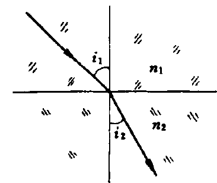
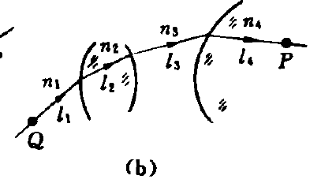
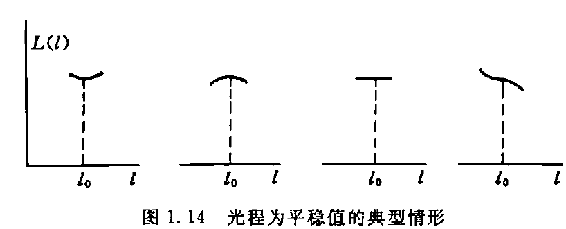

第0章 随便唠唠
关于平时分
已知：作业、笔记由研究生助教批改。
如果小班必须要给一个分数，分数的组成部分如下：
出勤
原则上出勤率不作为平时分组成部分。
不想来的话最好还是QQ上跟我请个假（随便找个理由）
作业
占大头
80%∼100%
关于换班
跟我说一声即可，不需要说明理由。
讲什么
三不讲
简单的不讲（太简单了没必要讲）
不会的不讲（自己都不会咋讲）
不考的不讲（不考还讲啥）
答疑
我说的每一句话都可能是错的。（我水平不高）
讲义内容之外的我很可能答不上来（虽然讲义内容之内的可能也一样答不上来）
科学上网
……
找电子书
zlib
https://zh.zlibrary-global.se/
小心盗版网站！凡要你先交钱后下载的都是盗版网站！
libgen
https://libgen.is/
annas
https://annas-archive.org/
算计物理群文件

电子笔记
markdown 记笔记
软件（vscode）
https://code.visualstudio.com/
markdown 基本语法
https://markdown.com.cn/
https://www.markdownguide.org/basic-syntax/
数学公式
https://www.cmor-faculty.rice.edu/~heinken/latex/symbols.pdf
https://katex.org/docs/supported
vscode 效率工具——snippets
https://www.freecodecamp.org/news/definitive-guide-to-snippets-visual-studio-code/
README.md 里有自己配置的 snippets 供参考
github——用于备份
https://github.com/
https://www.liaoxuefeng.com/wiki/896043488029600
问问题
知乎
Stack Exchange
https://stackexchange.com/
英语要好
google
维基百科
小时百科也还行
b站？
怎么学光学基础1？
听起来非常功利，但说实话会做题就不错了……
力学基础1这样搞可能没问题，但光学基础1真的别这样
非常“物理”的数学
第1章 几何光学
惠更斯原理
惠更斯原理
光扰动同时到达的空间曲面被称为波面或波前，波前上的每一点可以被看作一个新的扰动中心，称其为子波源或次波源，次波源向四周激发次波；下一时刻的波前应当是这些大量次波面的公共切面，也称其为包络面；次波中心与其次波面上的那个切点的连线方向，给出了该处光传播方向，亦即光射线方向。
惠更斯原理导出折射定律
sini2sini1=v2v1
其中，i1 与 v1 对应，i2 与 v2 对应
折射率
折射率的定义
介质的折射率，记为 n，定义为真空中的光速与光在介质中的传播速度之比，即：
n≡vc
其中，v 是光在介质中的传播速度
显然，真空的折射率为 1；非真空介质的折射率 n>1
折射率表述的折射定律
n1sini1=n2sini2
其中，n1 与 i1 对应，n2 与 i2 对应

色散
色散的定义
一种介质对不同波长的光具有不同的折射率，这被称作色散
介质中的波长
对于波，其波速 v 时间频率 f 和波长 λ 有如下关系：
v=fλ
在真空中：
c=f0λ0
其中，c 是真空中的光速，f0 是真空中的光频，λ0 是真空中的光波长
在介质中：
v=fλ
其中，v 是介质中的光速，f 是介质中的光频，λ 是介质中的光波长
两式相除，结合折射率的定义 n≡vc 可得：
n=ff0⋅λλ0
特别地，在线性介质的光场中，光扰动的时间频率仅由光源决定，与介质无关，于是 f0=f，这时得到：
n=λλ0
而之前提到，所有非真空介质的折射率 n>1，则上式说明在介质中光波长变短了（相较于真空中的光波长）。
光程
光程的定义

光程定义为光线路径的几何长度与所经过的介质折射率的乘积
设光沿路径 l 从空间中的 P 点传播到 Q 点，光程，记为 Ll(PQ)，定义为：
Ll(PQ)≡(l)∫PQn(r)∣dr∣
光程的离散化表达式：
Ll(PQ)≡i∑nili
其中，ni 是第 i 小段的折射率，li 是第 i 小段的长度
光程与相位差
注意，这里定点振动的相位按照 φ=ωt+φ0 的方式线性增加
设光沿路径 l 从空间中的 P 点传播到 Q 点。考虑路径 l 上的一点 r，设 t 时刻 r 处的波动在 dt 时间后传播到路径上的 r+dr 处。在无穷小传播过程中，光可看作沿直线传播，且这段线元内的介质的折射率是均匀的，即：
∣dr∣=v(r)dt=n(r)cdt(0)
其中，n(r) 是 r 处介质的折射率。（注意，这里 dr 一定是与 dt 有关的，从表述可以看出，是 dt 决定了 dr ）
t 时刻 r 处扰动的相位记为 φ(r,t)；类似地，t+dt 时刻 r+dr 处扰动的相位记为 φ(r+dr,t+dt)
光的传播可以看作定点振动的传播，自然而然地，光的传播必定意味着相位信息的传播。由于 t 时刻 r 处的振动在 dt 时间后传播到路径上的 r+dr 处，于是 t 时刻 r 处的相位信息在 t+dt 时刻传播到了 r+dr 处，于是有：
φ(r,t)=φ(r+dr,t+dt)(1)
在 t∼t+dt 时间内，r 处的相位从 φ(r,t) 线性地增加到 φ(r,t)+ωdt，即：
φ(r,t+dt)=φ(r,t)+ωdt(2)
联立 (1)(2)，消去 φ(r,t) 得：
φ(r+dr,t+dt)−φ(r,t+dt)=−ωdt
再用前面推导得到的式子消去 dt 得：
φ(r+dr,t+dt)−φ(r,t+dt)=−ωcn(r)∣dr∣
在同一时刻 t+dt，对 r 从 P 到 Q 沿路径 l 积分得：
φ(rQ,t+dt)−φ(rP,t+dt)=(l)∫PQ−ωcn(r)∣dr∣=(l)∫PQ−T2πcn(r)∣dr∣=(l)∫PQ−T02πcn(r)∣dr∣=−T0c2π(l)∫PQn(r)∣dr∣≡−λ02πLl(PQ)
可以看到，同一时刻 P,Q 两点间的相位差与时间无关，所有上式可以简写为：
φ(rQ,t)−φ(rP,t)=−λ02πLl(PQ)
这就是说，同一时刻空间中同一光线上两点 P,Q 处光振动的相位差由光从 P 出发沿光线 l 到 Q 的光程差决定
光程与时差
设某一振动在 tP 时刻传播到 P 点，在 tQ 时刻传播到 Q 点，则：
tQ−tP=i∑vili=i∑nili/c=c1i∑nili=cLl(PQ)
反射光束、折射光束的等光程性
反射定律、折射定律给出的反射光束或折射光束的方向，与等光程性的要求一致。人们可以从等光程要求出发，导出反射定律和折射定律。
费马原理
费马原理的表述
光线/沿/光程为平稳值的路径/传播
光程为平稳值有四种情况：极小值、极大值和常数

在 P,Q 确定的情况下，光程 L 仅由路径 l 这一函数决定。 光程 L 是泛函，而泛函为平稳值要求其变分为零，于是根据费马原理，光线的真实传播路径应该满足：
δL[l]=0
其中，δ 是变分算符
费马原理与成像
物像等光程性
由物点 P 发出一列球面波（或称之为同心光束），经系统变换为另一列球面波或另一个同心光束，则出射同心光束的中心称为像点。
成像过程是一个对同心光束实现共轭变换的过程。
从费马原理出发可以推得：从物点到像点的各光线的光程是彼此相等的。
球面折射傍轴成像公式
L(QOQ′)=ns+n′x
h2≈2rΔ 是这么来的：
考虑三角形 由 h,r−Δ,r 构成的直角三角形，勾股定理给出：
h2+(r−Δ)2=r2⟹h2−2rΔ+Δ2=0
Δ 是小量，Δ2 是二阶小量，约去二阶小量得：
h2≈2rΔ

L(QMQ′)(ps:h2≈2rΔ)=n(s+Δ)2+h2+n′(x−Δ)2+h2=ns2+h2+2sΔ+Δ2+n′x2+h2−2xΔ+Δ2≈ns2+h2+2sΔ+n′x2+h2−2xΔ=ns2+(2r+2s)Δ+n′x2+(2r−2x)Δ=ns1+s2(2r+2s)Δ+n′x1+x2(2r−2x)Δ≈ns(1+s2(r+s)Δ)+n′x(1+x2(r−x)Δ)=ns+n′x+[s(r+s)n+xr−xn′]Δ
光程差：
ΔL≡L(QMQ′)−L(QOQ′)≈[s(r+s)n+xr−xn′]Δ
当 Δ 前的系数为零，可近似认为满足物像等光程，此时可近似成像，并且得到球面折射傍轴成像公式：
s(r+s)n+xr−xn′=0
或者改写为：
sn+xn′=rn′−n
这里，s 是物距，x 是像距，r 是球面半径
若把像距记为 s′，则球面折射傍轴成像公式为：
sn+s′n′=rn′−n
光线方程
折射率分层均匀的情形

考虑折射率只与 y 有关，而与 x 无关的情况，n=n(y)
由折射定律，得：
n0sinθ0=n1sinθ1=⋯nsinθ=⋯
几何关系：
(ds)2=(dx)2+(dy)2⟹(dxds)2=1+(dxdy)2
dxds=sinθ1
⎩⎨⎧n0sinθ0=nsinθ(dxds)2=1+(dxdy)2dxds=sinθ1⟹dxdy=n02sin2θ0n2(y)−1